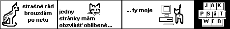

Co je potøeba - Co není potøeba - Dva kroky - Soubory - HTML editory - «ukání zdroje - Postup pro zaèáteèníky - Zlatá støední cesta

V tomto textu se budu zabývat krokem prvním, vytváøením souborù stránek. Napøed na vlastním disku.
Internetová stránka je soubor s pøíponou htm nebo html. Je to skoro obyèejný textový soubor obohacený o znaèky jazyka HTML (tagy). Soubor s pøíponou .html má na disku ikonku, která ukazuje, ¾e jde o stránku. Napøíklad mù¾e vypadat takto:
HTML editory jsou programy speciálnì urèené pro tvorbu stránek. Pro zaèáteèníky jsou pou¾itelné zejména wysiwyg editory, ve kterých pí¹ete rovnou text a kódem html se nezabýváte.
Ve wysiwyg editoru se normálnì napí¹e text, vlo¾í se obrázky a ulo¾í se to na disk do souboru s pøíponou html. To je v¹e. Editor v¹echny html znaèky (tagy) doplní sám.
Z wysiwyg editorù znám Dreamweaver, FrontPage 2000 (verze 2002 a 2003 jsou èesky), NVU a pár dal¹ích, ale ne moc dobrých programù. Wysiwyg editory mají samozøejmì své nevýhody, hlavní je sporná kvalita vytvoøeného kódu. To je ale pro zaèátek jedno. Více v textu o editorech.
Kromì wysiwyg editorù tedy existují i editory strukturní, ve kterých pí¹ete pøímo kód, ale ten program s tím hodnì pomáhá (napovídá, doplòuje apod.). Strukturní editory: HomeSite, PSPad, EasyPad, UltraEdit, jEdit apod., v nouzi i Poznámkový blok. Prostì normální textové editory. Ale to u¾ jsem u druhé mo¾nosti dìlání stránek, u »ukání zdroje.
Na psaní stránky nelze pou¾ívat Word.
Kdo chce být pánem situace, napí¹e si zdroj od zaèátku sám v textovém editoru. Musí se nauèit základy jazyka HTML, èemu¾ se stejnì èasem nelze vyhnout, proto¾e slo¾itìj¹í vìci se ve wysiwyg editorech dìlají ¹patnì. Nyní ukázka zdrojového kódu HTML:
<html>
<head>
<title>Má první stránka</title>
</head>
<body>
Moje první html stránka.
A nìjaké dal¹í texty.
</body>
</html>
Kdy¾ si vezmete tøeba Poznámkový blok (Notepad), vy»ukáte tam pøedchozí textík (nebo zkopírujete) a ulo¾íte jej nìkam na disk jako soubor tøeba pod jménem priklad1.html, máte hotovou první internetovou stránku . Pøíklad si mù¾ete zobrazit v prohlí¾eèi.
Jak vytvoøit HTML soubor ve Windows (jeden z mnoha zpùsobù). (Komu by nìco ne¹lo, a» pak zkusí je¹tì podrobnìj¹í návod.)
Zatím je ta stránka na va¹em disku. Kopírovat na server ji budete pozdìji.
V názvech souborù urèených pro web nikdy nepou¾ívejte diakritiku ani mezery! Doporuèuji v¹echny názvy zadávat malými písmeny (a» to potom nespletete).
Zajímavý zpùsob, jak se nauèit HTML a dìlat dobré stránky:
Napøíklad já jsem to tak zpoèátku dìlal.
Jak psát web pí¹e Yuhù, Du¹an Janovský. Kontakt. Poslední aktualizace 15. února 2009.